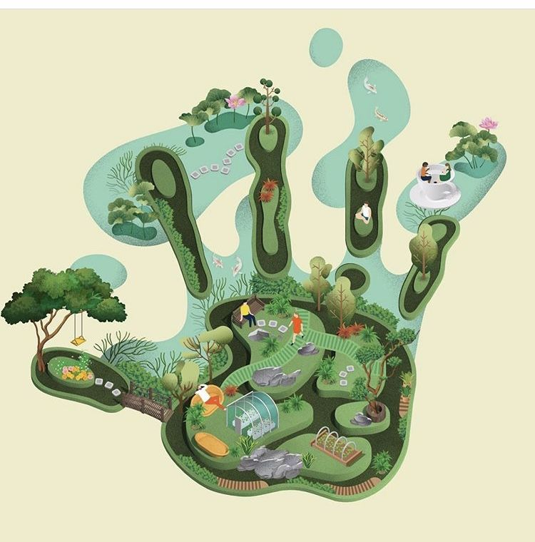

Menuju Ekonomi Sirkular dan Lingkungan Berkelanjutan
Ekonomi sirkular merupakan pendekatan inovatif yang berfokus pada penggunaan sumber daya secara berkelanjutan, di mana produk dan material dimanfaatkan kembali sebanyak mungkin untuk mengurangi limbah.
Dalam sistem ekonomi tradisional, pola konsumsi dan produksi masih linear — dari bahan mentah, menjadi produk, kemudian menjadi sampah. Sebaliknya, ekonomi sirkular menekankan daur ulang, perbaikan, dan inovasi agar siklus sumber daya tetap berjalan tanpa menambah beban lingkungan.
Teknologi berperan penting dalam mendukung transisi menuju ekonomi sirkular, mulai dari pengolahan limbah menjadi energi, inovasi bahan ramah lingkungan, hingga digitalisasi rantai pasok untuk efisiensi sumber daya.
Dengan menerapkan prinsip ekonomi sirkular, kita dapat memperpanjang umur produk, mengurangi ketergantungan pada sumber daya alam baru, dan menjaga keseimbangan ekosistem demi masa depan yang berkelanjutan.